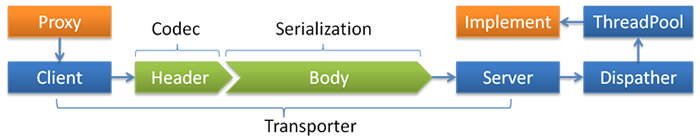

dubbo://
Dubbo 缺省协议采用单一长连接和 NIO 异步通讯，适合于小数据量大并发的服务调用，以及服务消费者机器数远大于服务提供者机器数的情况。
反之，Dubbo 缺省协议不适合传送大数据量的服务，比如传文件，传视频等，除非请求量很低。

- Transporter: mina, netty, grizzy
- Serialization: dubbo, hessian2, java, json
- Dispatcher: all, direct, message, execution, connection
- ThreadPool: fixed, cached
特性
缺省协议，使用基于 mina 1.1.7 和 hessian 3.2.1 的 tbremoting 交互。
- 连接个数：单连接
- 连接方式：长连接
- 传输协议：TCP
- 传输方式：NIO 异步传输
- 序列化：Hessian 二进制序列化
- 适用范围：传入传出参数数据包较小（建议小于100K），消费者比提供者个数多，单一消费者无法压满提供者，尽量不要用 dubbo 协议传输大文件或超大字符串。
- 适用场景：常规远程服务方法调用
约束
- 参数及返回值需实现
Serializable接口 - 参数及返回值不能自定义实现
List,Map,Number,Date,Calendar等接口，只能用 JDK 自带的实现，因为 hessian 会做特殊处理，自定义实现类中的属性值都会丢失。 - Hessian 序列化，只传成员属性值和值的类型，不传方法或静态变量，兼容情况 ^1：
| 数据通讯 | 情况 | 结果 |
|---|---|---|
| A->B | 类A多一种 属性（或者说类B少一种 属性） | 不抛异常，A多的那 个属性的值，B没有， 其他正常 |
| A->B | 枚举A多一种 枚举（或者说B少一种 枚举），A使用多 出来的枚举进行传输 | 抛异常 |
| A->B | 枚举A多一种 枚举（或者说B少一种 枚举），A不使用 多出来的枚举进行传输 | 不抛异常，B正常接 收数据 |
| A->B | A和B的属性 名相同，但类型不相同 | 抛异常 |
| A->B | serialId 不相同 | 正常传输 |
接口增加方法，对客户端无影响，如果该方法不是客户端需要的，客户端不需要重新部署。输入参数和结果集中增加属性，对客户端无影响，如果客户端并不需要新属性，不用重新部署。
输入参数和结果集属性名变化，对客户端序列化无影响，但是如果客户端不重新部署，不管输入还是输出，属性名变化的属性值是获取不到的。
总结：服务器端和客户端对领域对象并不需要完全一致，而是按照最大匹配原则。
配置
配置协议：
<dubbo:protocol name="dubbo" port="20880" />
设置默认协议：
<dubbo:provider protocol="dubbo" />
设置服务协议：
<dubbo:service protocol="dubbo" />
多端口：
<dubbo:protocol id="dubbo1" name="dubbo" port="20880" />
<dubbo:protocol id="dubbo2" name="dubbo" port="20881" />
配置协议选项：
<dubbo:protocol name=“dubbo” port=“9090” server=“netty” client=“netty” codec=“dubbo” serialization=“hessian2” charset=“UTF-8” threadpool=“fixed” threads=“100” queues=“0” iothreads=“9” buffer=“8192” accepts=“1000” payload=“8388608” />
多连接配置：
Dubbo 协议缺省每服务每提供者每消费者使用单一长连接，如果数据量较大，可以使用多个连接。
<dubbo:service connections="1"/>
<dubbo:reference connections="1"/>
<dubbo:service connections="0">或<dubbo:reference connections="0">表示该服务使用 JVM 共享长连接。缺省<dubbo:service connections="1">或<dubbo:reference connections="1">表示该服务使用独立长连接。<dubbo:service connections="2">或<dubbo:reference connections="2">表示该服务使用独立两条长连接。
为防止被大量连接撑挂，可在服务提供方限制大接收连接数，以实现服务提供方自我保护。
<dubbo:protocol name="dubbo" accepts="1000" />
dubbo.properties 配置：
dubbo.service.protocol=dubbo
常见问题
为什么要消费者比提供者个数多?
因 dubbo 协议采用单一长连接，假设网络为千兆网卡 ^3，根据测试经验数据每条连接最多只能压满 7MByte(不同的环境可能不一样，供参考)，理论上 1 个服务提供者需要 20 个服务消费者才能压满网卡。
为什么不能传大包?
因 dubbo 协议采用单一长连接，如果每次请求的数据包大小为 500KByte，假设网络为千兆网卡 ^3，每条连接最大 7MByte(不同的环境可能不一样，供参考)，单个服务提供者的 TPS(每秒处理事务数)最大为：128MByte / 500KByte = 262。单个消费者调用单个服务提供者的 TPS(每秒处理事务数)最大为：7MByte / 500KByte = 14。如果能接受，可以考虑使用，否则网络将成为瓶颈。
为什么采用异步单一长连接?
因为服务的现状大都是服务提供者少，通常只有几台机器，而服务的消费者多，可能整个网站都在访问该服务，比如 Morgan 的提供者只有 6 台提供者，却有上百台消费者，每天有 1.5 亿次调用，如果采用常规的 hessian 服务，服务提供者很容易就被压跨，通过单一连接，保证单一消费者不会压死提供者，长连接，减少连接握手验证等，并使用异步 IO，复用线程池，防止 C10K 问题。